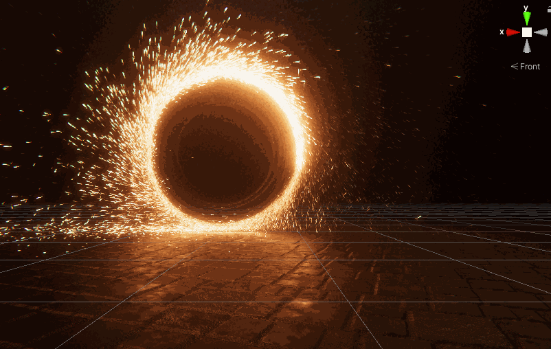

Unity 官方示例分析与重做 · 传送门
分析过程
- 拖动vfx 对象，观看粒子与对象是否分离判断===> 粒子使用world mode来模拟
- Front 观察：粒子在圆周处发射，周期性的喷发效果，粒子发射后有贴近圆周的效果（模拟自行车轮溅水的效果）
- Left 观察：粒子发射时，底部的粒子与圆有较大偏远，顶部的较少
- 速度较快，但是并没有观察到发射时刻 速度的差异
- 生命周期，如果从颜色的亮暗关系分析，偏离圆的粒子生命周期较长，靠近圆周的粒子生命周期较短（差异需要细调)
- 粒子数量较多
Front gif

Right/Left gif
原graph分析
- 从圆环处采样，圆环的朝向为分布在xoy平面 面向z+方向
- 根据采样的y信息，通过vector field 扰动坐标
- 根据粒子是否创建时是否处于周期性爆发点时设置不同的颜色强度（采样一个curve）
- 圆环采样默认的速度方向指向环的中心（法线方向），此时将速度调整为与圆环相切（切线方向）并且在z方向上分散粒子（表现在Left中可以看到底部粒子有明显的向两边飞的效果）
- 经过复杂计算（这里的节点你会发现min max都是反的）得到一个最终出身点的y轴数值高的 生命较短，靠近地面的粒子生命周期较长。
总结
除了vector field信息未知外，结合表现，初始化粒子的过程 需要呈现出两个特色
- 周期性的效果：初始化粒子有一个根据周期爆发有增强的效果
- Y轴信息：根据位置在世界坐标Y中的分布来确定效果。
简化实现
首先，粒子主要效果时从环的边缘向外喷射，因此使用circle作为发射器模型可能更简单一点
其次，圆的旋转操作我们可以设置一个参考角度 比如0 ，然后旋转这个角度，得到的这个新的角度就是当前需要爆发的角度。我们指定这个角度值为angle
根据这个angle 我们先把角度转换到0-360°之间。
这个angle，到angle+360°为当前粒子的出生角度（类似分配在圆周上）
1、考虑出生的概率，如果我们希望angle附近的粒子多，其他部位粒子少，我们可以设置一个比率来调整
2、将这个角度转换成0-1，采样一个curve来确定颜色强度
3、根据角度0-1 采样一个curve来确定速度的增强，然后再根据Y的信息再增强一次
4、同样，也用来处理lifetime，z的偏移等
5、根据粒子最终角度，确定x y 信息。
步骤一 获得当前pulse的角度

其中，rotation Speed表示角速度，最后将角度限制在0-360°之间。
这个值设置为angle。在angle+360°设置为当前有效的角度数值。
根据概率决定 粒子的角度分布，红框中为核心参数，其中50%的粒子集中在angle角度附近，区域大概是36°，其他50%的粒子分布在剩下的角度区域上。

获得的0-1的数值 用来采样不同的curve

通过remap节点，将0-1的数值转换为真实的角度值

然后计算得到对应的position中的x y值，然后可以根据y值进行采样
这里注意在圆周上，两个半圆的y值对称存在的，如果需要区分的话 需要考虑x的符号
比如

这里将x的符号为负值的一半丢弃了。

此时可以截图看到 粒子的运动效果

由于都是直接采样的 因此会有明显的边界，此时需要适当的添加随机来打破便界